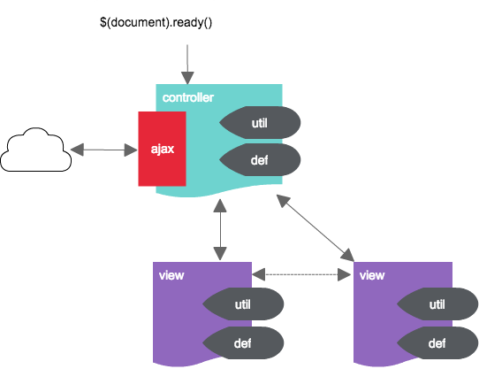

Get
You can get it on npm or bower.
npm install jquery.moxa --save
bower install jquery.moxa --save
If you're not into package management, download a file.
Setup
Include script after the jQuery library.
<script src="/path/to/jquery.moxa.min.js"></script>
Usage
// Controller
$.moxa.controller(function(aViews, aObserver, aDef, aUtil, aAjax){
// set view -> controller received functions
aObserver.set({
some: function(data){
// do something.
}
});
// ajax data.
var mData = {
some: null
};
// get somejson
aAjax.get('some.json', null, function(data){
// save data.
mData.some = data;
// send data to view
aViews.top.init(mData.some);
});
// window.Moxa is assigned the object. be able to access of global.
return {
swf: function(){
// do something.
}
}
});
// Top View
$.moxa.view('top', function(aController, aDef, aUtil, aViewObserver){
// set controller -> view received functions
aController.set({
init: function(data){
// do something.
}
});
// click events.
(function(){
$('#button').on('click', function(){
// trigger to controller.
aController.some();
});
})();
// define functions.
// $.append(), $.remove(), $hide(), $.addClass()........etc
});
controller's function is executed from $(document).ready() or Ext.onReady().
jQuery.Moxa By is to implement the process for each role(controller, view..etc) to provide, is suppressed to be a global function definition.
Each role function of the argument , or , is done via observer of jQuery.Moxa. And also it works to concat files and minify by gulp.
Features
- Dividing a JavaScript file
- Lightweight, simple, easy
- No Single Pag Applicatin framework
- It is also possible to concat files and minify by gulp
Targets
- Page that performs Ajax request
- 1000 or more lines of JavaScript code in a file
- Interactive UI ( click , message box , CSS operation ... etc)
- Want to utilize the existing assets (jQuery , etc.)
- Angular, React, Backbone are difficult , or there are not enough to use
Rules
Just observe the following rules, readability, maintainability will be greatly improved.
- Controller run Ajax request(Don't run Ajax request in View)
- The data gotten from Ajax is held by Controller, and passes to View, if necessary(Owner clarification of data)
- DOM operation perform in the View(It is not the $.find ()..etc in Controller)
- Click event handler registration is done in the immediate function of View.
jQuery.Moxa Objects

Controller
$.moxa.controller(callback)
The callback is run from the $(document).ready() or Ext.onReady(). Please implement the mainly call divided of view, ajax of execution, data processing. It can be only one registration.
callback(views, observer, def, util, ajax)
- views: View objects that are registered with $.moxa.view(). You can notify the function that has been registered in the View.
- observer: By registering the object for reception in observer.set() function, you can receive notification of observers from View.
- def: Def object that was registered at $.moxa.def()
- util: Util object
- ajax: Ajax object
View
$.moxa.view(name, callback)
The name, please specify a string that is easy to identify in Controller callback. The callback is run from the $ (document).ready() or Ext.onReady(). Please implement the mainly Click · DOM · CSS -related processing. View you can be multiple registration.
callback(controller, def, util, viewObserver)
- controller: By registering the object for reception in controller.set() function, you can receive notification of observers from Controller. In addition, you can also call notifying the registered function in Controller.
- def: Def object that was registered at $.moxa.def()
- util: Util object
- viewObserver: By registering the object for reception in viewObserver.set() function, you can receive a notification observer from another View. In addition, you can the child be notified by calling the registered function in another View.
Util
isEmpty(data)
It will return false if the empty string, null, [ ].
isShow(el)
It will return false if el is hidden(display: none).
$.moxa.util(properties)
By passing an object that keys and functions as a set in it, you will be able to extend the Util.
Def
$.moxa.def(properties)
By keys and values to pass an object as a set, you can be registered in the Def. When you register a URL · setting flag · message string , etc. It is convenient.
Ajax
get(url, data, success, error)
This will contact the server at the GET request.
- url: Contact URL
- data: The value to be transmitted to the server
- success: Ajax event that will be called on success
- error: Ajax event that will be called on failure
post(url, data, success, error)
This will contact the server at the POST request.
- url: Contact URL
- data: The value to be transmitted to the server
- success: Ajax event that will be called on success
- error: Ajax event that will be called on failure
$.moxa.ajax(properties)
By passing an object that keys and functions as a set in it, you will be able to extend the Ajax. Common ajax processing, for example, it is useful to register and the like want to do a specific process in the request failure.